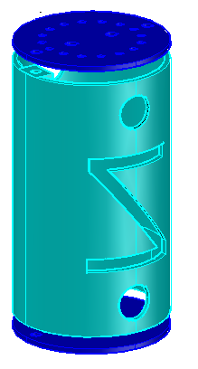
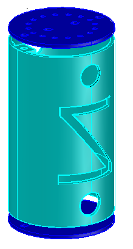
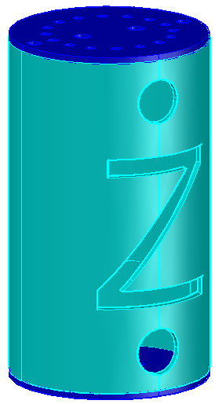
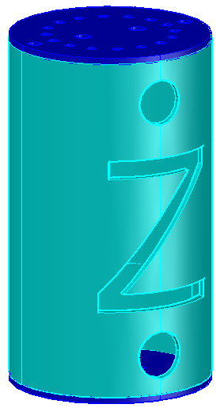

Estos diseños han sido hechos en AutoCAD. Consiste en una lata con nuestro logotipo "Z" y 2 tapas que hay una en la parte de arriba y otro abajo. En la parte superior, la tapa tiene 20 agujeros.
- 16 agujeros para poder atar bien las cuerdas del paracaídas.
- 2 agujeros a los laterales para los tornillos.
- 2 agujero casi en el medio, uno para la antena y otro para el interruptor.
Después en la tapa inferior contiene 4 agujeros.
- 2 agujeros a los laterales para los tornillos.
- 2 agujero casi en el medio, uno para la antena y otro para el interruptor.
En los siguientes dibujos se pueden ver las diferentes formas de la lata.

 

 
